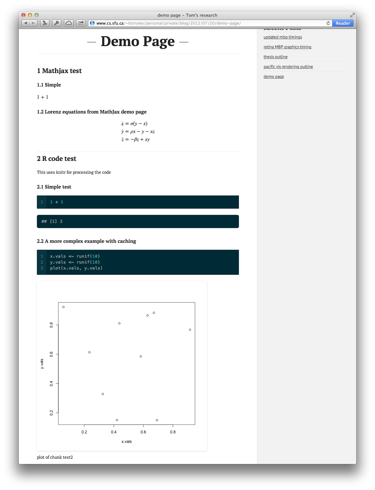

An R-based research notebook
I recently set up a fork of the Octopress blogging software to generate posts that contain explanatory text, LaTex math, and output from R code.
Motivation
For my research I’ve been preparing weekly reports to send out before meetings. For me at least, writing things out really cements concepts and usually helps to filter out a lot of the cruft of poorly thought out ideas. I started by emailing out pdfs I generated using a combination of knitr and multimarkdown.
The problem with emailing pdfs is that I needed to keep track of all the old reports, they weren’t indexed, and I couldn’t generate things like cross links between reports.
What I really wanted was a blog. I’ve been really liking Octopress as the platform for this blog.
I like the fact it creates static pages which I can then upload to my web account at my University and put them behind a password so only my supervisors can have access. It also keeps all old reports around, allows links among posts, and generates lists of posts for each category.
The project is set up as a fork of Octopress so if you’re interested in using it the project as well as the installation instructions are at https://github.com/gabysbrain/r-notebook.
Example post
So, what does the output look like? Here the plots are generated by R during execution and automatically linked into the post. The math is handled by MathJax.

Combining the pieces
I wanted to keep using knitr and MathJax as before. They work really well for my purposes.
I recently found out that version 0.7 of knitr supports executing languages other than R which is fantastic! I haven’t had a chance to try it out yet so I’m not sure how well it works. There’s a demo page for it here: http://yihui.name/knitr/demo/engines/
Adding MathJax to Octopress was just a simple matter of adding a link to the MathJax javascript file to the page template in Octopress.
The major additions are written as 2 plugins: multimarkdown.rb, which adds multimarkdown support to Octopress, and knitr.rb, which runs all the blog posts through knitr to execute the R code and generate the plots and such before the final mmd to html conversion.
mmd plugin
The original version is here. The only real change I made was that the extension is now multimarkdown. I found that because octopress/jekyll’s extension mapping will match partial extensions mmd was being detected as a different file type than multimarkdown.
# multimarkdown renderer for jekyll
#
# adapted from: http://git.io/9-RWUg
module Jekyll
require 'multimarkdown'
class MultimarkdownConverter < Converter
safe false
priority :low
def matches(ext)
ext =~ /multimarkdown/i
end
def output_ext(ext)
".html"
end
def convert(content)
#puts MultiMarkdown.new(knit(content)).to_html
MultiMarkdown.new(content).to_html
end
end
endknitr
The knitr plugin consists of 2 files knitr.rb which is just a wrapper for knit_markdown.R which does most of the work.
knitr.rb
Here’s the code for knitr.rb. It uses tempfiles instead of just sending the text directly to knitr so that we can index the cache by blog post name. That way there’s a unique cache directory for each blog post and identical cache section names in different blog posts won’t clobber each other.
require 'tempfile'
module Jekyll
require_relative 'post_filters'
# A filter to pass mmd files through knitr
class KnitrPost < PostFilter
KNITR_PATH = File.join(File.dirname(__FILE__), "knit_markdown.R")
unless File.exists?(KNITR_PATH) and File.executable?(KNITR_PATH)
throw "knit_markdown.R is not found and executable"
end
def pre_render(post)
if post.is_post?
if post.ext == '.multimarkdown'
postname = post.name[0..-post.ext.length-1]
post.content = knit(postname, post.content)
end
end
end
# runs everything through knitr
def knit(name, content)
#knit_content, status = Open3.capture2(KNITR_PATH, name,
#:stdin_data=>content)
# set up the tempfiles to do the translation
src_file = Tempfile.new('srcfile')
src_file.write(content)
src_file.close
dst_file = Tempfile.new('dstfile')
dst_file.close
# execute!
`#{KNITR_PATH} #{name} #{src_file.path} #{dst_file.path}`
# read back in the processed file
dst_file.open
knit_content = dst_file.read
dst_file.close
# remove the files
src_file.unlink
dst_file.unlink
# This is a hack to get the double backslashes in latex math
# working with liquid templates
knit_content.gsub(/\\\\$/){"\\\\\\\\"}
end
end
endknit_markdown.R
This is the script that does most of the heavy lifting. Extensions to knitr’s processing is handled through various “hooks.” These are described in the knitr manual.
Lines 9-15 set up the cache and image directories that knitr will use. Lines 28-66 is an extension to support movies of multiple R plots. In order to get Octopress to highlight R code we need to wrap it in liquid codeblock tags. The hook for that is done by lines 69-71. The rest just sets all the hooks I want to use and renders the files using knitr.
#!/usr/bin/Rscript
library(knitr)
args <- commandArgs(trailingOnly=TRUE)
# the file name generating this R code
# needed so we can put separate cache and image links
post.name <- args[1]
store.prefix <- if(is.na(post.name)) "" else post.name
cache.path <- paste('cache', store.prefix, "", sep='/')
image.save.path <- paste('source/images/knitr', store.prefix, "", sep='/')
image.load.path <- paste('/images/knitr', store.prefix, "", sep='/')
opts_chunk$set(cache.path=cache.path)
opts_chunk$set(fig.path=image.save.path)
# also get the input and output files
in.file <- if(is.na(args[2])) file("stdin") else args[2]
out.file <- if(is.na(args[3])) stdout() else args[3]
pic.sample <- function() {
sample(1000,1)
}
# hook to force marked to reload output images
# uses a random query element on the image
# also supports creating animations
query_plot_hook <- function(x, options) {
# pull out all the relevant plot options
animate <- options$fig.show == 'animate'
fig.num <- options$fig.num
fig.cur <- options$fig.cur
if(is.null(fig.cur)) fig.cur <- 0
# Don't print out intermediate plots if we're animating
if(animate && fig.cur < fig.num) return('')
base <- opts_knit$get('base.url')
if (is.null(base)) base <- ''
# adjust the base for the base path
filename <- paste(image.load.path, basename(paste(x,collapse='.')), sep='')
if(options$fig.show == 'animate') {
# set up the ffmpeg run
ffmpeg.opts <- options$aniopts
fig.fname <- paste(sub(paste(fig.num, '$',sep=''), '', x[1]), "%d.png", sep="")
mov.fname <- paste(sub(paste(fig.num, '$',sep=''), '', x[1]), ".mp4", sep="")
mov.linkname <- paste(image.load.path, basename(mov.fname), sep='')
if(is.na(ffmpeg.opts)) ffmpeg.opts <- NULL
ffmpeg.cmd <- paste("ffmpeg", "-y", "-r", 1/options$interval,
"-i", fig.fname, mov.fname)
system(ffmpeg.cmd, ignore.stdout=TRUE)
# figure out the options for the movie itself
mov.opts <- strsplit(options$aniopts, ';')[[1]]
opt.str <- paste(
" ",
if(!is.null(options$out.width)) sprintf('width=%s', options$out.width),
if(!is.null(options$out.height)) sprintf('height=%s', options$out.height),
if('controls' %in% mov.opts) 'controls="controls"',
if('loop' %in% mov.opts) 'loop="loop"')
sprintf('<video %s><source src="%s?%d" type="video/mp4" />video of chunk %s</video>', opt.str, mov.linkname, pic.sample(), options$label)
} else {
sprintf(' ',
options$label, base, filename, pic.sample())
}
}
# highlight R code on output
code_hook <- function(x, options) {
print(options)
prefix <- sprintf("\n\n{{ "{%%" }} codeblock %s lang:r %%}", options$label)
suffix <- "{{ "{%" }} endcodeblock %}\n\n"
paste(prefix, x, suffix, sep="\n")
}
# hack render_markdown so it doesn't override my custom hook
render_custom <- function() {
render_markdown(strict=TRUE)
knit_hooks$set(plot=query_plot_hook,
source=code_hook)
}
# need to read everything through stdin and stdout
pat_html()
render_custom()
opts_knit$set(progress=FALSE)
#opts_knit$set(dev='png')
opts_knit$set(out.format='custom')
opts_knit$set(input.dir=getwd())
knit(in.file, out.file)Conclusion
And that’s about it. The rest of the changes are in the repository of course.
Feel free to fork the repository for your own work and let me know what you think!